| How old are you? | ||
|---|---|---|
| Median | SD | Range |
| 46 | 16.44174 | 18-91 |
📖 Read more about this survey; 📄 View the PDF version of this report
Acknowledgements
We thank Professor Tim Miller and other anonymous academic and policy experts in AI for their valuable input during the development of our research questions and other aspects of the survey design process.
Declarations of Conflict of Interest
The authors have no conflicts to declare.
Citation
Saeri, A.K., Noetel, M., & Graham, J (2024). Survey Assessing Risks from Artificial Intelligence: Technical Report. Ready Research, University of Queensland.
Funding Declaration
This project was funded by the Effective Altruism Infrastructure Fund.
Executive Summary
The development and use of AI technologies is accelerating. Across 2022 and 2023, new large-scale models have been announced monthly, and are achieving increasingly complex and general tasks(Maslej et al., 2023); this trend continues in 2024 with Google DeepMind Gemini, OpenAI Sora, and others.
Experts in AI forecast that development of powerful AI models could lead to radical changes in wealth, health, and power on a scale comparable to the nuclear and industrial revolutions (Davidson, 2023; Grace et al., 2022).
Addressing the risks and harms from these changes requires effective AI governance: forming robust norms, policies, laws, processes and institutions to guide good decision-making about AI development, deployment and use (Dafoe, 2018). Effective governance is especially crucial for managing extreme or catastrophic risks from AI that are high impact and uncertain, such as harm from misuse, accident or loss of control.
Understanding public beliefs and expectations about AI risks and their possible responses is important for ensuring that the ethical, legal, and social implications of AI are addressed through effective governance. We conducted the Survey Assessing Risks from AI (SARA) to generate ‘evidence for action’, to help public and private actors make the decisions needed for safer AI development and use.
This survey investigates public concerns about 14 different risks from AI, from AI being used to spread fake and harmful content online, to AI being used for the creation of biological and chemical weapons; public support for AI development and regulation; and priority governance actions to address risks from AI (with a focus on government action).
We found that:
- Australians are concerned about diverse risks from AI
- Of most concern: AI acting in conflict with human interests (misalignment), misuse of AI by bad actors, and technological unemployment
- Fake online content, cyber attacks, & loss of privacy were seen as the risks most likely to impact large numbers of Australians
- There were mixed opinions on whether AI will be net good or bad
- ~4 in 10 support AI development, 3 in 10 oppose
- ~4 in 10 think AI will be net good, 4 in 10 think AI will be net harmful
- Australians want the government to prioritise AI safety
- #1 priority: prevent dangerous and catastrophic outcomes from AI
- Other priorities: endorse requiring audits to make sure AI is safe before release, & requiring AI companies to be liable for harms
- 9 in 10 Australians believe the government requires a new regulatory body for AI
- Australians expect Australia to demonstrate international leadership in AI governance
- 8 in 10 think Australia should lead international development and governance of AI
- 6 in 10 support a ‘pause’ on AI development
- Australians think AI should be treated as an existential risk, like nuclear weapons and pandemics
- 8 in 10 think preventing extinction from AI should be a global priority
- AI was 3rd most likely cause of extinction, after nuclear war and climate change
- 6 in 10 chance that AI will eventually become more intelligent than humans
- Australians are becoming more familiar with AI and are using it more
- Some applications (e.g., chatbots) are widely recognised as using AI, but others (e.g., fitness trackers) less so
- 4 in 10 are using AI monthly or more frequently
- Information about AI is primarily from the news
How we conducted SARA
Between 18 January and 5 February 2024, The University of Queensland surveyed 1,151 adults living in Australia, online using the Qualtrics survey platform. Participants were recruited through the Online Research Unit’s panel, with nationally representative quota sampling by gender, age group, and state/territory.
Multilevel regression with poststratification (MRP) was used to create Australian population estimates and confidence intervals, using 2021 Census information about sex, age, state/territory, and education.
Who completed SARA?
| Which gender do you identify as? | n | percent |
|---|---|---|
| Female | 510 | 45% |
| Male | 631 | 55% |
| Total | 1141 | 100% |
| Which Australian state or territory do you currently reside in? | n | percent |
|---|---|---|
| Australian Capital Territory | 20 | 2% |
| New South Wales | 410 | 36% |
| Northern Territory | 22 | 2% |
| Queensland | 236 | 21% |
| South Australia | 60 | 5% |
| Tasmania | 23 | 2% |
| Victoria | 259 | 23% |
| Western Australia | 111 | 10% |
| Total | 1141 | 100% |
We analysed the data using a new approach called Multiple Regression with post-stratification (MRP)
MRP is a statistical technique that adjusts estimates from a sample, using known information about a target population.
MRP has been used to successfully predict the overall outcome of the 2012 presidential election, despite a high level of bias in the survey sample.
Benefits of MRP: Improves accuracy of population estimates and quantifies error using known demographic distributions (e.g., Census)
Drawbacks of MRP: More complex analysis and strict data requirements. Sample and population data must be measured in the same way.
Approach for identifying AI risks
We scanned the academic literature for existing national and international surveys focused on public perceptions and attitudes towards AI risk.
We then extracted and generated a list of 150 AI risks from the following publications identified in the literature scan:
| Authors | Citation |
|---|---|
| Floridi 2018 | Floridi, L., Cowls, J., Beltrametti, M. et al. AI4People—An Ethical Framework for a Good AI Society: Opportunities, Risks, Principles, and Recommendations. Minds & Machines 28, 689–707 (2018). https://doi.org/10.1007/s11023-018-9482-5 |
| Zhang & Dafoe 2019 | Zhang, Baobao and Dafoe, Allan, Artificial Intelligence: American Attitudes and Trends (January 9, 2019). Available at SSRN: https://ssrn.com/abstract=3312874 or http://dx.doi.org/10.2139/ssrn.3312874 |
| Selwyn 2020 | Selwyn, N., Gallo Cordoba, B., Andrejevic, M., & Campbell, L. (2020). AI for Social Good - Australian Attitudes Toward AI and Society Report (Version 1). Monash University. https://doi.org/10.26180/13159781.v1 |
| AIPI 2023 | The AI Policy Institute (AIPI)/YouGov survey of US voters about AI, 2023 Source |
| Gillespie 2023 | Gillespie, N., Lockey, S., Curtis, C., Pool, J., & Akbari, A. (2023). Trust in Artificial Intelligence: A Global Study. The University of Queensland and KPMG Australia. doi: 10.14264/00d3c94 |
| Elicit 2023 | List of concepts task: “Create a list of risks from artificial intelligence” [Elicit uses a combination of scholarly search and language models to generate a list of unique concepts] |
We then inductively clustered the risks, aiming for at least three risks per cluster. Some of the Elicit-generated risks were of low quality, so they were excluded. 22 clusters were identified, of which 13 were retained in the List of AI risks. We made the decision to retain clusters primarily on how clear and relevant they would be to the general public, and we sought to template our list of risks on the Zhang & Dafoe 2019 list of AI governance challenges, which was replicated in Selwyn et al 2020.
Names and descriptions of these risks were created for inclusion in the final survey. The full list of key risks and their descriptions can be viewed in the Appendix of this report.
What AI risks are Australians most concerned about?
To answer this question, we asked Australians which risks from AI they were most concerned about. We also asked Australians to judge the likelihood that these risks would affect audiences of different breadths and proximity over the next 10 years. The dual assessment of concern and likelihood was included to provide a comprehensive picture of the risks Australians’ consider most pressing. Risks that are judged both highly concerning and highly likely are clear candidates for immediate action.
Australians hold a wide range of concerns about AI, with the greatest concerns focusing on AI safety, trustworthiness and alignment with human values.
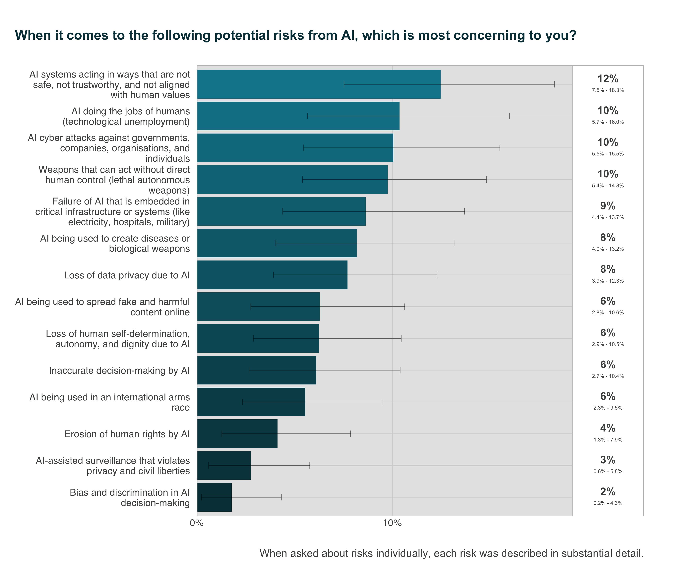
While Australians are more concerned about some risks from AI than others, Figure 1 demonstrates that Australians are aware of and concerned about a diverse range of risks. When asked which risk from a set of 14 risks from AI were most concerning, the top risk was AI systems acting in ways that are not safe, not trustworthy, and not aligned with human values (12%), technological unemployment from AI (10%), AI-enabled cyber attacks (10%) and lethal autonomous weapons (10%). Lesser, yet notable, risks of concern to Australians include AI failures in critical infrastructure (9%) and diseases or biological weapons created with help from AI (8%).
Australians are least concerned about erosion of human rights by AI (4%), AI-assisted surveillance that violates privacy and civil liberties (3%) and bias and discrimination in decision-making by AI(2%).
Australians see fake online content, cyber attacks, and loss of privacy as most likely to impact people around the world and people in Australia over the next 10 years.
Australians judge that risks from AI related to fake and harmful content, cyber attacks, data privacy and surveillance are most likely (1-1% probability) to impact large numbers of people in Australia over the next 10 years. These four risks are consistent with other Australian research; a 2020 KPMG/UQ survey found the same four risks judged as most likely to affect Australians in the near future (Lockey et al., 2020).
None of the presented 14 risks from AI were rated as more unlikely than likely (< 50%) to impact large numbers of Australians in the next decade.
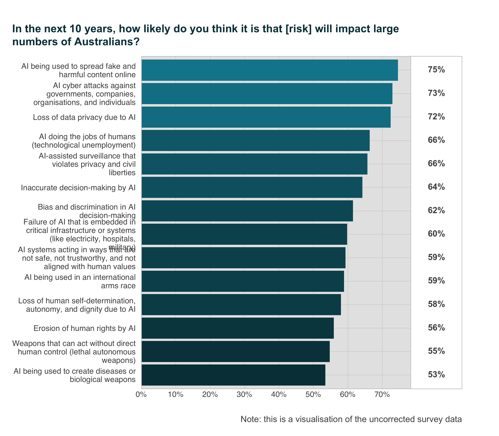
What are Australians expectations of AI?
To answer this question, we asked Australians how much they supported the general development of AI, and, more directly, whether they thought AI would do more good or harm overall.
Australians modestly support AI development
Australians are split between supporting, being ambivalent towards, and opposing AI development. A plurality of Australians (44%) support AI development. Over a quarter of the population are ambivalent towards AI development (27%), while 29% oppose it. This result suggests a moderate tendency towards support for AI development, although a majority share of the population (56%) is either opposed or undecided.
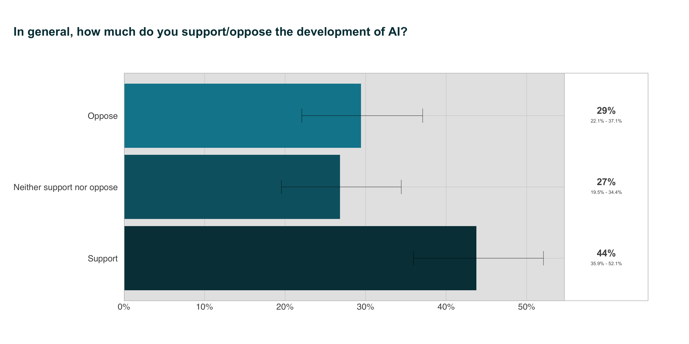
Support for AI development has decreased since 2020: the same question in a Monash survey of Australians found that 57% supported the development of AI, with 28% opposed (Selwyn et al., 2020).
This 13% drop in support and small rise in opposition could suggest that Australians are becoming more cautious towards AI development, possibly due to an increased awareness of risks or high-profile incidents with AI technologies. The stable and substantial rate of ambivalence suggests that there might still be a gap in understanding regarding AI’s benefits and risks, and may point to an opportunity for public engagement.
Australians are evenly divided on whether AI will be positive or negative overall
Overall, the same number of Australians think that AI will lead to net good, as those who think AI will lead to net harm. 37% of Australians tend to think that AI will do more good than harm, while 43% tend to think that it will do more harm than good. However, a notable proportion of the public (20%) are neutral about whether AI will be a net good or net harm.
Compared with a 2020 survey of 2,444 US adults (post-stratified to be representative of the US population), Australians appear to be significantly more pessimistic about AI. The 2023 US survey estimated that 48% of Americans expect more good than harm to come from AI, while 31% expect more harm than good (Elsey & Moss, 2023).
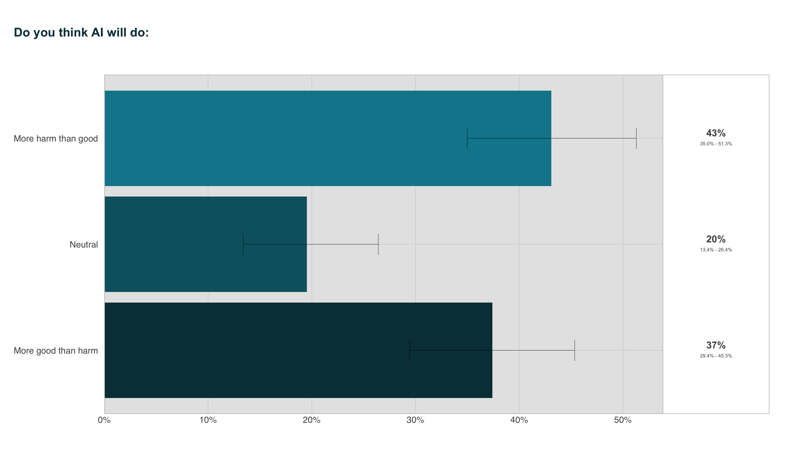
What expectations do Australians have about AI regulation?
We asked a number of related questions to gauge Australians’ expectations about AI regulation, including what policy actions the government should focus on, support for a new regulatory body for AI, beliefs about whether Australia should lead international AI regulation and development, and support for a pause on worldwide AI development.
Australians want the government to prioritise AI safety
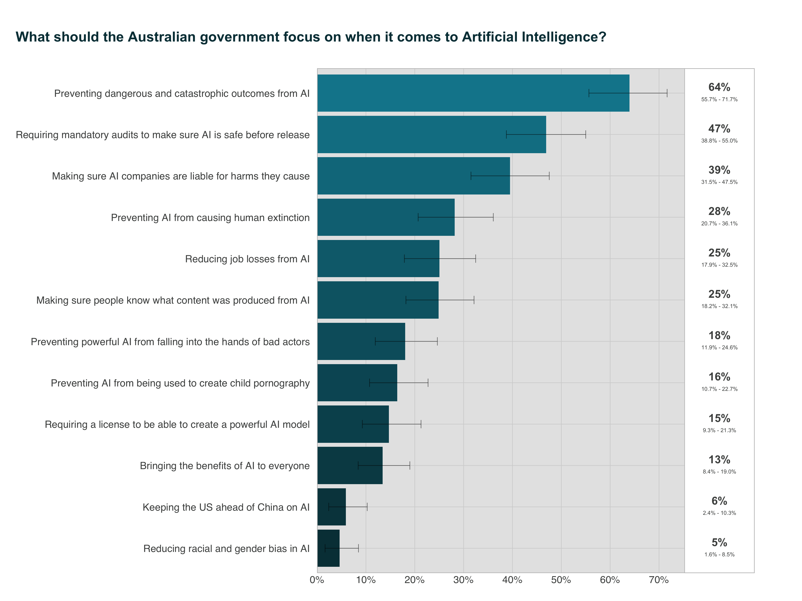
Australians’ top priority is ‘preventing dangerous and catastrophic outcomes from AI’, with 64% of respondents selecting it as one of their top three priorities when compared against other policy options. The second most selected priority was ‘requiring mandatory audits to make sure AI is safe before release’ (47%), and the third most selected was ‘making sure AI companies are liable for the harms they cause’ (39%). Together, these approaches characterise the Australian public position as one focused on maximising AI safety.
Public priorities for AI policy options appear to be consistent between Australians and Americans: a recent national survey by AIPI and YouGov asked US voters to select priorities from an identical list of government actions. Americans’ top three most-selected priorities were the same as Australians (The AI Policy Institute (AIPI)/YouGov Survey of US Voters about AI, 2023).
A strong majority of Australians still want a new regulatory body for AI
The need for improving AI governance was affirmed, with nearly 9 in 10 (86%) Australians agreeing that Australia requires a new regulatory body to govern and promote responsible AI innovation. In contrast, a much smaller proportion of Australians disagree with the need for a new regulatory body (6%), while 7% remain uncertain. This trend of very strong support has remained consistent over the last four years: a 2020 nationally-representative survey found that 87% of Australians agreed with the need to establish a new regulatory body for AI (Selwyn et al., 2020).
Australians want Australia to lead in the international development, governance and regulation of AI
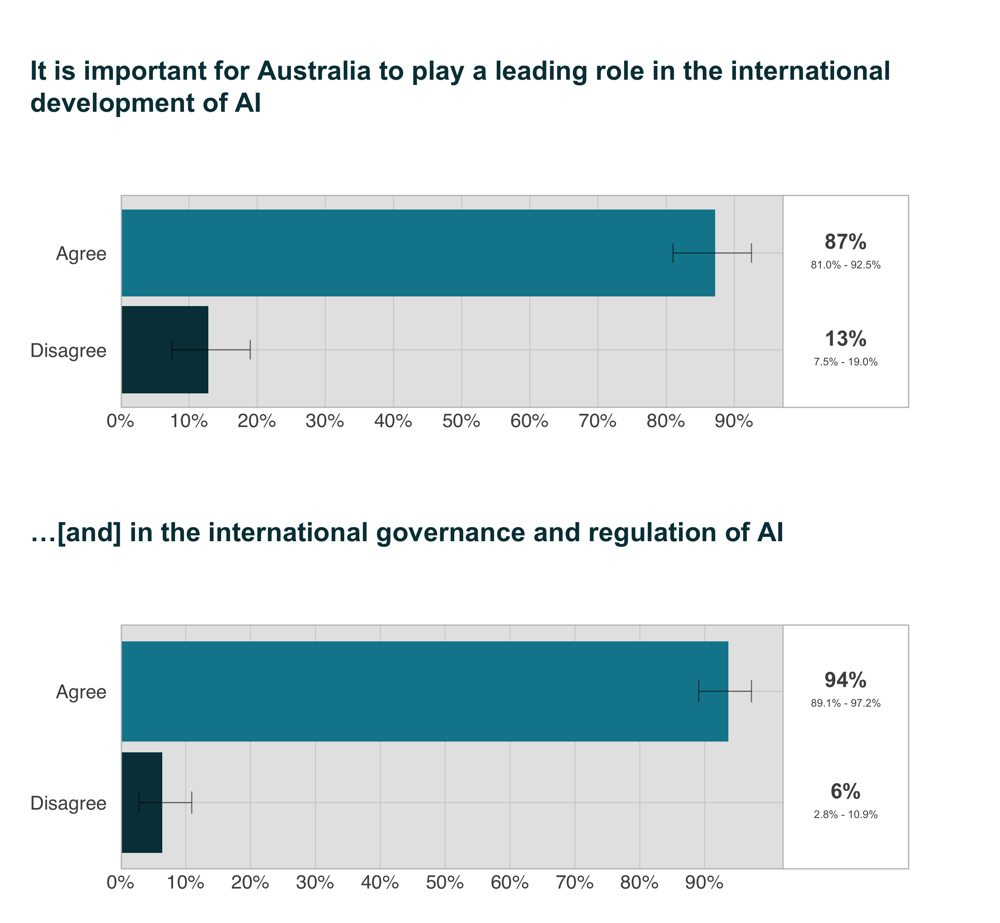
Australians strongly support the position that Australia, as a nation, should lead global AI development and governance. 9 in 10 Australians (94%) agreed that it was important for Australia to play a leading role in the international governance and regulation of AI. In contrast, only 6% disagreed.
Australians have similar expectations regarding the international development of AI: nearly 9 in 10 (87%) agreed that it was important for Australia to play a leading role, while only 13% disagreed. This finding supports other Australian research: a 2020 representative survey found that a strong majority of Australians (81%) considered it important for Australia to lead the international development of AI (Selwyn et al., 2020).
These findings suggest that Australia’s leadership in AI is important to Australians and should be considered in policy decisions affecting global AI development and regulation.
The majority of Australians support a pause on worldwide AI development
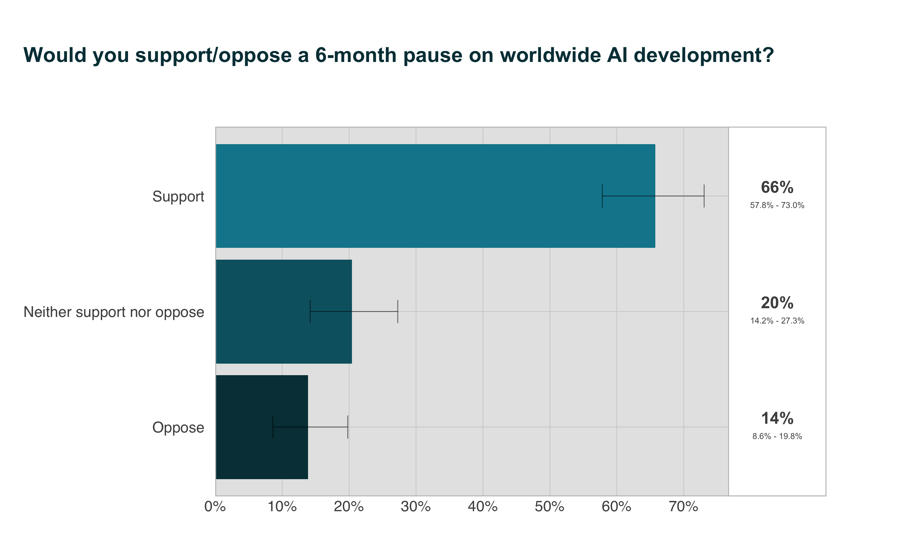
A majority of Australians (66%) support a 6-month pause on worldwide AI development. The idea of a 6-month pause on the development of the most advanced AI models has been advocated by some technology leaders who have expressed concern about AI development and use outpacing effective control, regulation, or adaptation Pause Giant AI Experiments (2023). This finding suggests that Australians are concerned about the risks posed by AI, believe in the need to better comprehend AI systems, and prioritise safety and thoughtful regulation over immediate technological gains. A sizable proportion of Australians (20%) neither support nor oppose a pause. This ambivalence could be due to insufficient information or conflicting views on AI’s benefits and risks, and may represent an important opportunity for public engagement. A minority of Australians oppose the pause (14%).
These findings broadly support those of a previous US survey (Elsey & Moss, 2023), in which a majority of Americans were also supportive of a pause. However, Americans display a majority support that is substantially weaker (51%) than that of Australians, and greater opposition (25%).1
Do Australians view AI as a catastrophic or existential risk?
The vast majority of Australians agree that existential risks from AI should be a global priority
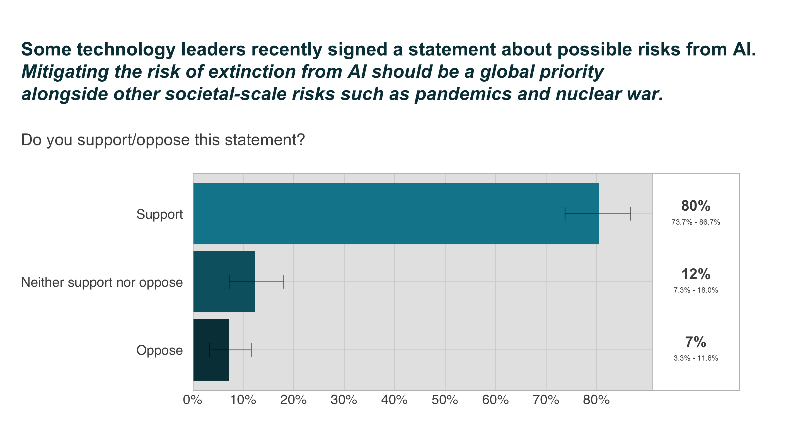
In 2023, the Center for AI Safety released a public statement signed by hundreds of technology leaders and AI experts that “mitigating the risk of extinction from AI should be a global priority alongside other societal-scale risks such as pandemics and nuclear war”.
A significant majority (80%) of Australians support the statement. In contrast, a much smaller proportion of Australians are neutral towards the idea (12%), while an even smaller proportion is opposed (7%) to it.
Australians are more supportive of this statement than Americans, based on a 2023 survey. Compared with Australians, Americans display a much broader distribution of opinions, with a much weaker majority in favour of the idea (58%), and a substantial minority either opposing the idea (22%) or remaining neutral (18%) (Elsey & Moss, 2023).
Australians perceive extinction risks from Artificial Intelligence as more likely than pandemics, but less likely than nuclear war and climate change
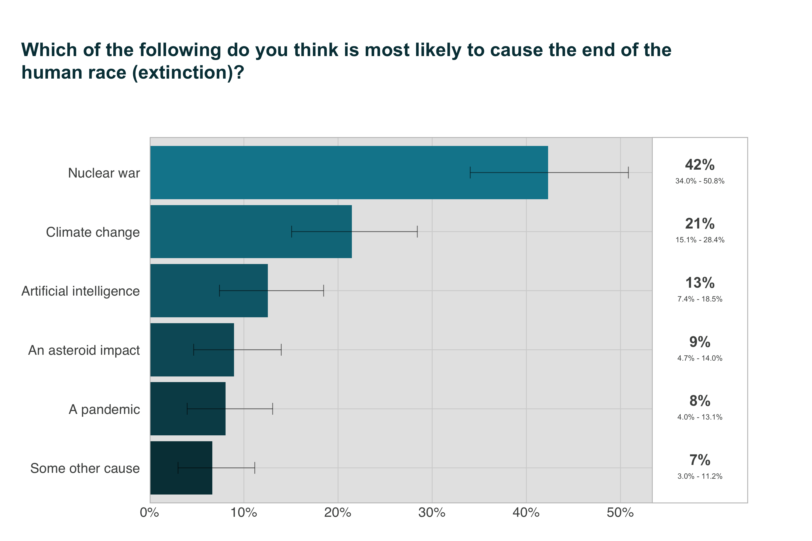
Out of the six presented extinction risks, Australians ranked AI 3rd, with 13% of respondents selecting it as the most likely cause of human extinction. A smaller proportion of participants judged either an asteroid impact (9%, ranked 4th), pandemic (8%, ranked 5th) or some other risk (7%, ranked 6th) as most likely to cause human extinction.
Consistent with American survey results (Elsey & Moss, 2023; YouGov Survey, 2023), Australians ranked nuclear war first among the presented risks (42%), and climate change second (21%). In contrast to Australians, a much smaller proportion of Americans perceived AI as the top extinction risk when asked to select between the same six options (4%), ranking it last by a considerable margin (Elsey & Moss, 2023).
Australians think it is likely that AI will become more intelligent than people
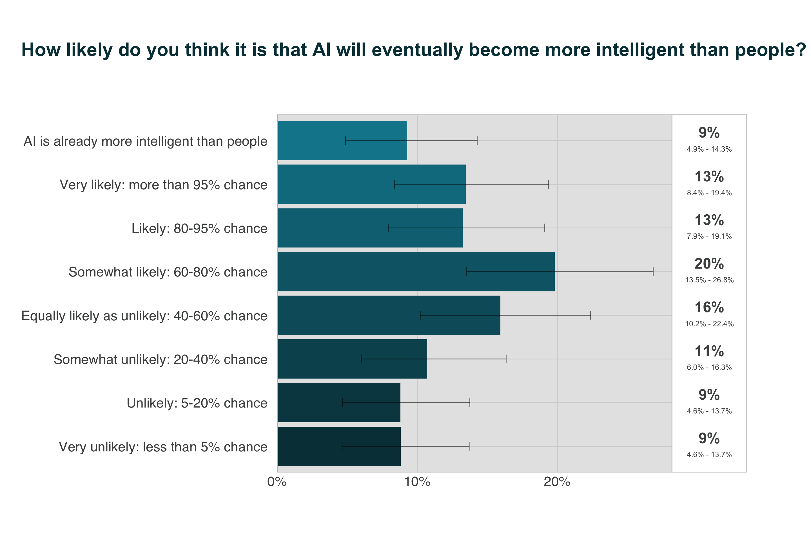
A small majority of Australians (56%) think that it is at least ‘somewhat likely: 60-80% chance’ that AI will eventually achieve greater than human intelligence, with a substantial 23% of the population judging this event as very likely (>95% chance) or more. Strikingly, 9% of Australians think AI is already more intelligent than people.
The average estimate of likelihood across Australians is about 61%. Put another way, the Australian public thinks there is about a 6 in 10 chance that AI will eventually become more intelligent than people.2
These findings are in broad agreement with a similar question from a previous US survey, in which most US respondents thought AI would ultimately become more intelligent than people, and only 15% judged it as not at all likely (Elsey & Moss, 2023).
About 1 in 3 Australians think it is at least ‘moderately likely’ AI will cause human extinction within the next 50 years
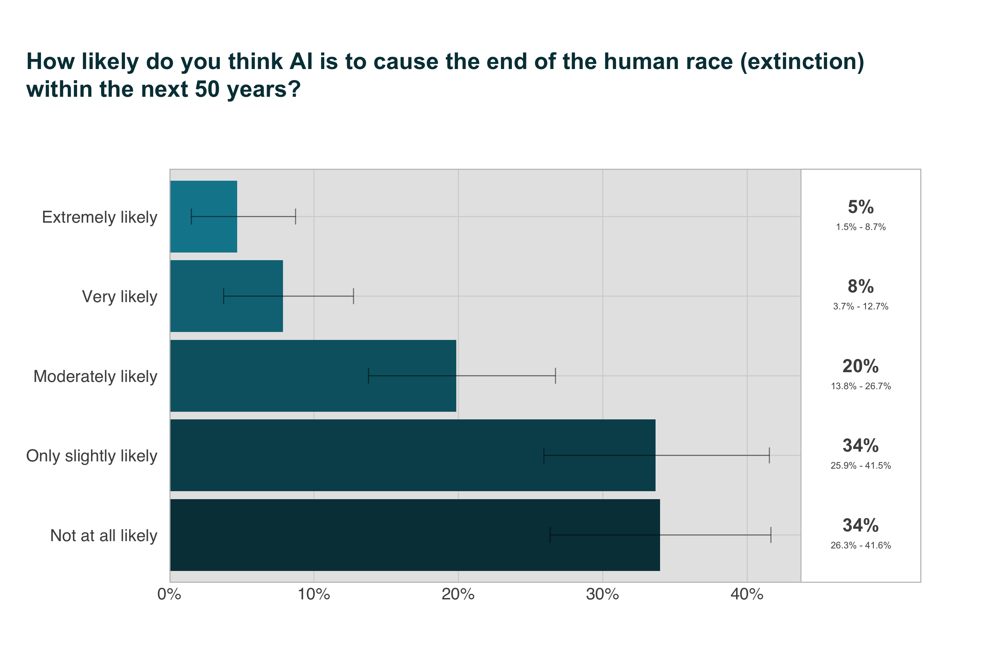
In general, Australians lean towards doubt about whether AI will cause human extinction within the next 50 years: the majority of respondents judged the possibility as either ‘only slightly likely’ (34%) or ‘not at all likely’ (34%). However, a substantial proportion of Australians–about a third—think AI is at least ‘moderately likely’ (32%) to cause human extinction within the next 50 years. Notably, 8% of Australians think that this outcome is ‘very likely’, while 5% think it is ‘extremely likely’. Although the minority view, these proportions represent a non-trivial subset of the population endorsing a profound assertion, given the enormity of the event and the timescale. For reference, superforecasters predict a 4% risk of nuclear weapons causing the death of more than 10% of humans within a 5-year period by 2100, while the median nuclear expert predicts an 8% risk.
This findings corroborates results from a previous US survey in which the majority of Americans also considered it either ‘only slightly likely’ or ‘not at all likely’ that AI would lead to extinction in the next 50 years (Elsey & Moss, 2023).
How well do Australians understand AI?
Australians still express limited familiarity with AI, and mis-classify many services that use AI
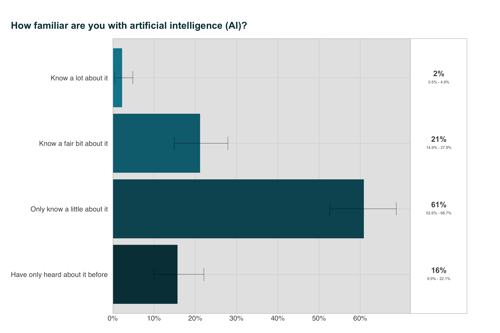
As seen in Figure 12, the majority of Australians (77%) judge themselves to have only passing knowledge and familiarity with AI, with 16% having ‘only heard about it before’ and 61% ‘only knowing a little’ about it. In contrast, only 21% of Australians judged they ‘knew a fair bit about’ AI. The smallest proportion of Australians by far claimed they ‘knew a lot about’ AI (2%). This result is consistent with other Australian research in which self-reported familiarity with AI was low for the majority of respondents (Lockey et al., 2020).
These findings suggest that while most Australians are aware of AI to some extent, the depth of this understanding is generally superficial, with a significant majority estimating only a basic awareness.
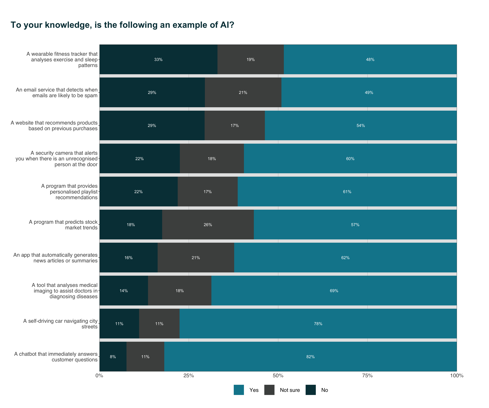
This question asked Australians to identify whether 10 specific technologies were examples of AI. All of the examples were examples of AI.
As seen in Figure 13, most Australians recognised popular consumer-facing applications, such as chatbots (82%) and self-driving cars (78%), as examples of AI. Conversely, more specialised applications, like wearable fitness trackers (48%), spam detection services (49%) and websites that recommend products based on previous purchases (54%), were least recognised by Australians as examples of AI. Overall, a sizeable proportion of Australians either mis-classified or were unsure about the classification of many examples of AI (from 19-51%). With the exception of fitness trackers and spam detection services, the majority of Australians correctly classified all examples.
Americans tend to recognise the same use cases of AI as Australians: in a 2023 YouGov survey of US adults, the top three correctly recognised AI applications were also chatbots (76%), self-driving cars (69%) and medical imaging tools (63%) (YouGov, 2023).
Similarly, Americans were least able to recognise spam detection services (47%) and wearable fitness trackers (46%) as examples of AI.
There is a broad spectrum of use of AI tools among Australians
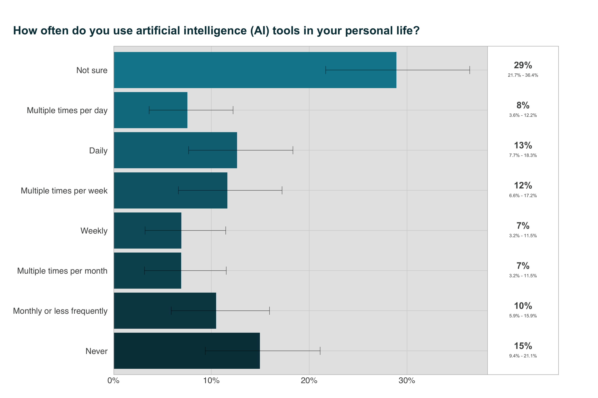
Out of the presented options, a plurality of Australians were unsure how often they use AI in their daily lives (29%). This uncertainty could suggest a lack of awareness about what constitutes AI or which tools are powered by AI. Almost half of Australians (47%) use AI multiple times per month or more. A sizable proportion (21%) of Australians have incorporated AI into their daily routines, with 13% using it daily and 8% using it multiple times per day. 10% of Australians use AI once a month or less, suggesting a sporadic reliance on AI technologies, possibly limited to specific applications or services. Lastly, 15% of Australians never use AI tools. This could be indicative of lack of access to AI tools, a lack of awareness about which interactions involve AI, or a conscious choice to avoid using AI.
Overall, these findings suggest that while there are a number of Australians who use AI regularly, there is also a significant proportion of the population that is either unaware of their use of AI or does not engage with AI tools at all.
Compared with American data from 2020, Australians broadly appear to use AI more, with 30% of Americans using AI multiple times per month or more (YouGov, 2023).
A much larger proportion of Americans (36%) report never using AI. Slightly less Americans than Australians are unsure how often they use AI (22%). It is worth noting that the American data used in this comparison may not fully reflect current trends. The past four years have seen major AI advancements. These advancements have likely changed how often Americans use AI, possibly narrowing the previously noted gaps with Australia.
Australians’ actions regarding AI are most influenced by traditional news media
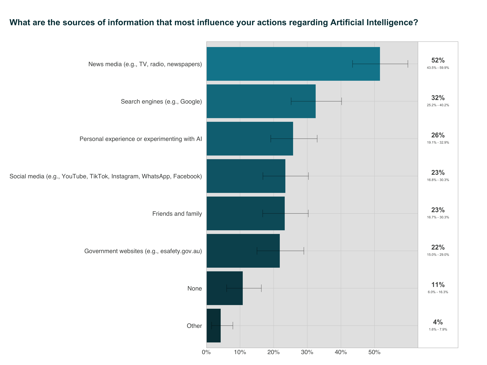
Traditional news media such as TV, newspapers and radio influence Australians’ actions regarding AI much more than any other source of information, with a slim majority of respondents (52%) selecting it. Search engines are the next most influential source 32%. About 1 in 4 Australians are influenced by personal experience and experimentation with AI (selected by 26%). Out of the presented information sources, Australians’ actions are least influenced by friends and family (23%), social media (23%) and government websites (22%).
Implications and options for action
Findings from SARA show that Australians are concerned about diverse risks from AI, especially catastrophic risks, and expect the Australian Government to address these through strong governance action.
Australians’ ambivalence about AI and expectation of strong governance action to address risks is a consistent theme of public opinion research in this area (Gillespie et al., 2023; Lockey et al., 2020; Selwyn et al., 2020).
Australians are concerned about more diverse risks from AI, compared to Government
The Australian Government published an interim response to its Safe and Responsible AI consultation (Safe and Responsible AI in Australia Consultation, 2024). As part of its interim response, the Government plans to address known risks and harms from AI by strengthening existing laws, especially in areas of privacy, online safety, and mis/disinformation.
Findings from SARA show that some Australians are concerned about privacy, online safety, and mis/disinformation risks, so government action in these areas is a positive step. However, the risks that Australians are most concerned about are not a focus of the Government’s interim response. These priority risks include AI systems being misused or accidentally acting in ways that harm people, AI-enabled cyber attacks, and job loss due to AI. The Government must broaden its consideration of AI risks to include those identified as high priority by Australians.
Australians want Government to establish a national regulator for AI, require pre-release safety audits, and make companies liable for AI harms
The Government plans to develop a voluntary AI Safety Standard and voluntary watermarking of AI-generated materials. Findings from SARA show that Australians support stronger Government action, including mandatory audits to make sure AI is safe before release (Safe and Responsible AI in Australia Consultation, 2024), and making AI companies liable for harms caused by AI (Weil, 2024). Australians show strong support for a national regulatory authority for AI; this support has been consistently high since at least 2020 (Selwyn et al., 2020). To meet expectations, Government should establish a national regulation for AI, and implement strong action to limit harms from AI.
Australians want Government action to prevent dangerous and catastrophic outcomes from frontier models and general-purpose models
In its interim response, the Government described plans to establish mandatory safeguards for ‘legitimate, high-risk settings’ to ‘ensure AI systems are safe when harms are difficult or impossible to reverse’, as well as for ‘development, deployment and use of frontier or general-purpose models’.
Findings from SARA indicate that Australians want the government, as a #1 priority action, to prevent dangerous and catastrophic outcomes from AI. Frontier and general-purpose models carry the greatest risk for catastrophic outcomes (Anderljung et al., 2023), and are also advancing in capabilities without clear safety measures. Australians believe preventing the risk of extinction from AI should be a global priority. To meet Australians’ expectations, Government must ensure it can understand and respond to emergent and novel risks from these AI models.
Appendix
Full list of identified risks from AI and their descriptions
Loss of data privacy due to AI
Algorithms used in AI applications are often trained on vast amounts of personal data, including medical records, social media content, and financial transactions. Some worry that data used to train algorithms are not collected, used, and stored in ways that protect personal privacy.
AI being used to spread fake and harmful content online
AI has been used by governments, private groups, and individuals to harm or manipulate internet users. For instance, automated bots have been used to generate and spread false and/or harmful news stories, audios, and videos.
AI cyber attacks against governments, companies, organisations and individuals
Computer scientists have shown that AI can be used to launch effective cyber attacks. AI could be used to hack into servers to steal sensitive information, shut down critical infrastructures like power grids or hospital networks, or scale up targeted phishing attacks.
AI-assisted surveillance that violates privacy and civil liberties
AI can be used to process and analyse large amounts of text, photo, audio, and video data from social media, mobile communications, and CCTV cameras. Some worry that governments, companies, and employers could use AI to increase their surveillance capabilities.
AI systems acting in ways that are not safe, not trustworthy, and not aligned with human values
As AI systems become more advanced, they will increasingly make decisions without human input. One potential fear is that AI systems, while performing jobs they are programmed to do, could unintentionally make decisions that go against the values of its human users, such as physically harming people.
Weapons that can act without direct human control (lethal autonomous weapons)
Lethal autonomous weapons (LAWs) are military robots that can attack targets without control by humans. LAWs could reduce the use of human combatants on the battlefield. But some worry that the adoption of LAWs could lead to mass violence. Because they are cheap and easy to produce in bulk, national militaries, terrorists, and other groups could readily deploy LAWs.
AI doing the jobs of humans (technological unemployment)
Some forecast that AI will increasingly be able to do jobs done by humans today. AI could potentially do the jobs of blue-collar workers, like truckers and factory workers, as well as the jobs of white-collar workers, like financial analysts or lawyers. Some worry that in the future, robots and computers could do most of the jobs that are done by humans today.
Failure of AI that is embedded in critical infrastructure or systems (like electricity, hospitals, military)
As AI systems become more advanced, they could be used by the military or in critical infrastructure, like power grids, highways, or hospital networks. Some worry that the failure of AI systems or unintentional accidents in these applications could cause 10 percent or more of all humans to die.
AI being used in an international arms race
Countries are investing billions of dollars to develop powerful AI systems for surveillance, autonomous weapons, cyber operations, propaganda, and command and control systems. Some worry that an arms race between countries like the United States and China could lead to extreme dangers. To stay ahead, the countries may race to deploy advanced military AI systems that they do not fully understand or can control. We could see catastrophic accidents, such as a rapid, automated escalation involving cyber and nuclear weapons.
AI being used to create diseases or biological weapons
AI could help design or modify diseases, making them more contagious or lethal. Governments, private groups, or individuals could use these capabilities to create dangerous biological pathogens that could be used in biowarfare or bioterrorism.
Bias and discrimination in AI decision-making
Increasingly, AI is being used to make decisions that affect humans, such as in employment, justice, financial, and medical decision-making. AI has the potential to make less biased decisions than humans. But algorithms trained on biased data could lead to discrimination against certain groups. Also, AI may lack transparency such that human users do not understand what the AI is doing, or why it reaches certain decisions in specific cases.
Inaccurate decision-making by AI
Increasingly, AI is being used to make decisions that affect humans, such as in employment, justice, financial, and medical decision-making. However, the decisions made by an AI may be wrong. For example, it could make a mistake in diagnosing disease and recommending treatment, give bad financial advice, or cause a traffic accident when operating a self-driving car. Also, AI may lack transparency such that human users do not understand what the AI is doing, or why it reaches certain decisions in specific cases.
Erosion of human rights by AI
As AI technology becomes more integrated into society, some people are concerned about its impact on human rights. AI systems could erode human rights such as physical liberty, privacy, freedom of opinion and expression, the right to work and education.
Loss of human self-determination, autonomy, and dignity due to AI
The increasing integration of AI into many aspects of life could reduce human self-determination, autonomy, and dignity. As important decisions are increasingly made by AI, humans could lose accountability and oversight for those decisions. Over time, humans may lose important skills and eventually become dependent on AI systems they no longer understand.
References
Anderljung, M., Barnhart, J., Korinek, A., Leung, J., O’Keefe, C., Whittlestone, J., Avin, S., Brundage, M., Bullock, J., Cass-Beggs, D., Chang, B., Collins, T., Fist, T., Hadfield, G., Hayes, A., Ho, L., Hooker, S., Horvitz, E., Kolt, N., … Wolf, K. (2023). Frontier AI regulation: Managing emerging risks to public safety. https://arxiv.org/abs/2307.03718
Dafoe, A. (2018). AI governance: Opportunity and theory of impact. https://www.allandafoe.com/opportunity; Centre for the Governance of AI.
Davidson, T. (2023). What a compute-centric framework says about takeoff speeds. Open Philanthropy.
Elsey, J., & Moss, D. (2023). US public opinion of AI policy and risk. Rethink Priorities.
Gillespie, N., Lockey, S., Curtis, C., Pool, J., & Akbari, A. (2023). Trust in artificial intelligence: A global study. The University of Queensland; KPMG Australia.
Grace, K., Stein-Perlman, Z., Weinstein-Raun, B., & Salvatier, J. (2022). 2022 expert survey on progress in AI. AI Impacts.
Lockey, S., Gillespie, N., & Curtis, C. (2020). Trust in artificial intelligence: Australian insights.
Maslej, N., Fattorini, L., Brynjolfsson, E., Etchemendy, J., Ligett, K., Lyons, T., Manyika, J., Ngo, H., Niebles, J. C., Parli, V., Shoham, Y., Wald, R., Clark, J., & Perrault, R. (2023). Artificial intelligence index report 2023. https://arxiv.org/abs/2310.03715
Selwyn, N., Cordoba, B. G., Andrejevic, M., & Campbell, L. (2020). AI for social good - australian attitudes toward AI and society report.pdf. Monash University.
Weil, G. (2024). Tort law as a tool for mitigating catastrophic risk from artificial intelligence.
YouGov. (2023). YouGov survey: Identifying AI. YouGov.
Footnotes
Full text of the question: “Some technology leaders recently signed an open letter calling on AI labs to pause development of certain large-scale AI systems for at least six months worldwide. They cited fears of the ‘profound risks to society and humanity’. They argue we can use this time to better understand these AI systems and put safety measures in place. Other technology leaders have argued that such concerns are overblown, and such a pause is unnecessary. They argue that such a pause would only hold us back from getting the benefits of developments in AI. How much would you support/oppose pausing the development of large-scale AI systems for at least 6 months worldwide?”↩︎
This number is determined by taking the numerical midpoint of each response (e.g., Somewhat unlikely: 20-40% chance → 30%) and averaging them. We coded responses that AI is already more intelligent people as 100%.↩︎